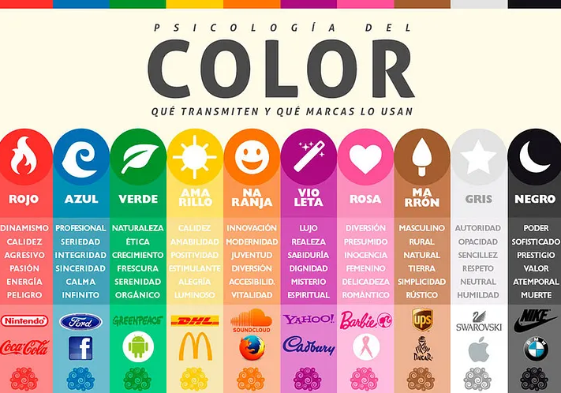

Rojo
Evoca emociones fuertes y aumenta el apetito
Simboliza pasión, amor e intensidad
En marketing: aumenta la frecuencia cardíaca, crea urgencia
Usado en ventas de liquidación y restaurantes
Amarillo
Estimula procesos mentales y comunicación
Representa optimismo, juventud y claridad
Capta atención en escaparates
Usado en productos para bebés
En exceso puede causar ansiedad
Azul
Color preferido por hombres
Asociado con agua, calma y serenidad
Reduce el apetito, aumenta productividad
Transmite seguridad y confianza
Usado en instituciones financieras y oficinas
Naranja
Refleja entusiasmo y calidez
Asociado con precaución y agresión en marketing
Influye en compradores impulsivos
Transmite alegría, seguridad y asequibilidad
Verde
Simboliza salud, serenidad y naturaleza
Alivia la depresión
En marketing: crea sensación de relajación
Asociado con riqueza y ecología
Púrpura
Representa realeza, éxito, riqueza y sabiduría
Usado en cosméticos y productos antienvejecimiento
Denota imaginación y creatividad
En exceso puede distraer
Negro
Simboliza sofisticación, misterio y poder
Usado en productos elegantes y de lujo
Efectivo para llamar la atención sutilmente
En exceso puede ser repulsivo
Blanco
Denota limpieza, pureza y seguridad
Crea sensación de espacio y neutralidad
Usado para anunciar descuentos
Fomenta creatividad y claridad.
